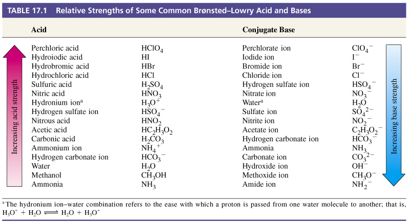

Chapter 16: Acid Base Equilibria
- Acids
- Sour Taste
- Causes certain dyes to change color
- Arrhenius: When dissolved in water, increases concentration of H+ (restricted to aqueous)
- Bronsted-Lowry: Donates proton (H+)
- Lewis: Electron-pair acceptor
- Bases
- Bitter Taste
- Slippery (ex. soap)
- Arrhenius: When dissolved in water, increases concentration of OH- (restricted to aqueous)
- Bronsted-Lowry: Accepts proton (H+)
- Lewis: Electron-pair donor
- Amphiprotic: Able to act as a base and an acid
- Conjugate acid-base pair: Acids create conjugate bases while bases create conjugate acids, differing in the presence of the proton H+
- Stronger the acid, weaker the conjugate base
- Stronger the base, weaker the conjugate acid
- Strong acid: completely transfers protons to water
- Negligible conjugate base (in terms of basicity)
- Conjugate base of weak acid is weak base
- Conjugate base of substance with negligible acidity is strong base
- Leveling effect: Stronger bases react with water to produce OH-, Stronger acids react with water to produce H+
- Conjugate Pair Table
- Equilibrium favors transfer of proton from stronger acid to stronger base to form weaker acids and bases
- Autoionization of water: One water can donate to another water
- Process happens rapidly so no water is ionized for long
- Ion product of water: Keq of water, at 25 C is 1 x 10^-14
- If concentration of OH is equal to H, it is neutral
- pH = -log[H+] in an aqueous solution
- pH meter: voltage is generated which calibrates pH
- Acid base indicators: exist as both acids and bases, changes color based on pH
- Red Litmus: 5 or lower
- Blue Litmus: 8 or higher
- Phenolphthalein: Colorless to Pink from 8 to 10
- Strong Acids
- HCl, HBr, HI, HNO3, HClO3, HClO4, H2SO4
- Strong Bases
- Ionic hydroxides (NaOH, KOH, Sr(OH)2, etc.)
- Strong basic solutions are created by using oxide ions in ionic metal oxides such as (Na2O and CaO)
- Ka: Acid dissociation constant
- Percent Ionization: Concentration ionized / Original concentration x 100%
- Another way to measure strength of acids
- Decreases as concentration increases
- H+ not directly proportional to concentration of weak acid
- Polyprotic acids: Acids with more than one ionizable H
- Successive ionizations: One ionization after another
- Always easier to remove first H+ than second H+ due to change in charge so Ka is successively smaller
- Kb: Base dissociation constant
- Weak bases:
- Neutral substance with an atom with nonbonding pair of electrons that can accept protons (amines ex. ammonia)
- Anions of weak acids
- Ka x Kb = Kw
- Ka of acids and Kb of conjugate base
- Henderson Hasselbalch: pH = pKa + log (base / acid)
- Salt Solutions
- Any salt dissolved in water is completely dissociated
- Hydrolysis: Ions reacting with water to produce H+ or OH-
- Anion reacting with water
- Anions are considered conjugate base of acids
- Add proton H to it
- If HX is strong acid, anion is negligible in basicity
- If HX is weak acid, anion is weak base, increases pH of solution by making OH-
- If salts are amphiprotic, if Ka > Kb, solution will be more acidic, if Ka < Kb, solution will be more basic
- Cation reacting with water
- Polyatomic cations are considered conjugate acid of weak bases
- Lowers pH
- Stronger charge results in higher Ka
- Heavier or less charge results in low Ka
- Combined effect of cation and anion
- Negligible Anion and Cation: Neutral pH
- Anion and Negligible Cation: Basic
- Cation and Negligible Anion: Acidic
- Anion and Cation: Based on relative abilities of ions to react to water
- Metal ions are positively charged, attracting water, which makes them hydrated. The stronger the charge, the stronger the attraction. This facilitates transfer of protons (H+) to solvent water molecules
- Acid-Base Chemical Structure
- Factors affecting acid strength
- Molecule with H will only donate protons if H-X bond is polarized to →
- Ionic hydrides are polarized to ← resulting in base
- Nonpolar results in neither acidic nor basic solutions
- Strong bonds = weaker acid (ex. HF)
- Greater stability of conjugate base = Stronger the acid
- Binary Acids
- HX and X is members of same group
- Strength of H-X bond decreases with increased size
- Acidity increases going down a group
- Acidity increases as electronegativity of X increases, left to right
- Oxyacids
- Acids in which OH groups are bound to central atom
- Y-O-H
- If Y is metal: Ionic compound is formed due to electrons being drawn to high charged oxygen
- If Y is nonmetal, bond with oxygen is covalent, so they are either acidic or neutral
- As electronegativity of Y increases, acidity increases
- As electron density is drawn to Y, H is more easily broken off
- Conjugate base stability increases
- Strength of acid increases as additional electronegative atoms are bound to central atom Y
- Increases stability of conjugate base, pulls density from O-H bond
- Aka: Increasing number of oxygen bound to Y increases acidity
- Acidity increases as oxidation number of central atom increases
- Carboxylic Acids
- Acids containing carboxyl group (COOH)
- Ex. formic and benzoic acid
- Additional oxygens increase acidity
- Conjugate base of carboxylic acids can exhibit resonance, increasing stability by spreading negative charge
- Extra
- Metal + Acid produces helium gas
-

Chapter 17: Additional Aspects of Aqueous Equilibria
- Ksp: Solubility Product
- Dissolution of solid
- Product of ions involved raised to power of coefficients
- Magnitude of Ksp helps determine concentration
- Common-Ion Effect
- Solubility is decreased in the presence of a second solute that has a common ion
- Solubility increases the more acidic the solution is
- As pH is lowered
- Less Concentration = Precipitates first
- pH = -log[H]
- pOH = -log[OH]
- Buffered solutions
- H+ = Ka x (HX)/(X-)
- Buffer capacity: amount of acid or base the buffer can neutralize before pH begins to change to an appreciable degree
- pH range: range over which buffer acts effectively to resist change
- Acid-Base Titrations
- Strong Acid-Strong Base
- Weak Acid-Strong Base Titrations
- Titrations of Polyprotic Acids: multiple equivalence points
- Titrating with Acid-Base Indicator
Chapter 18: Chemistry in the Environment
- WIP
AP Chem
AP Chemistry study guide created by Jeffrey Chou.
Based off of Mr. Leung's curriculum and the Baron's AP Chemistry resource.